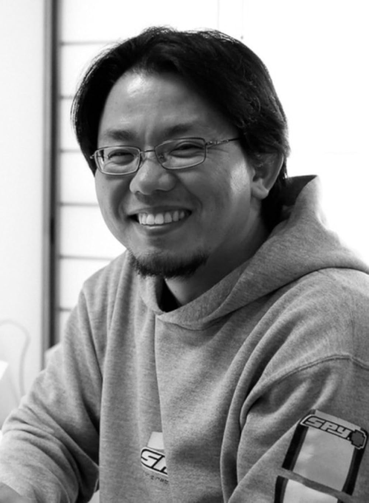
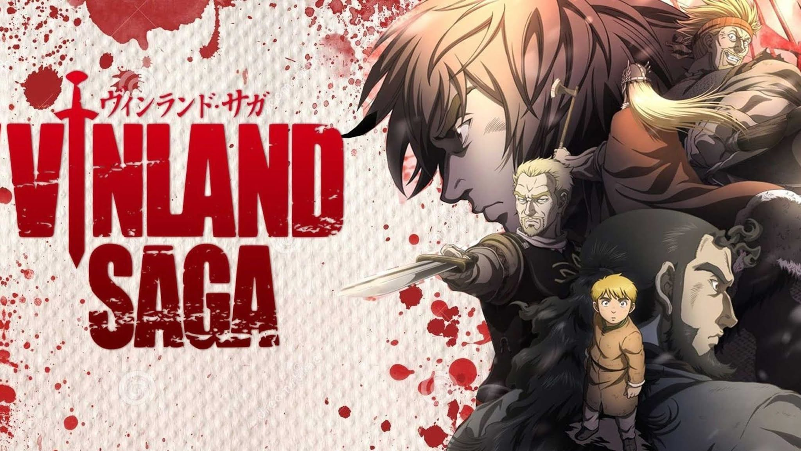
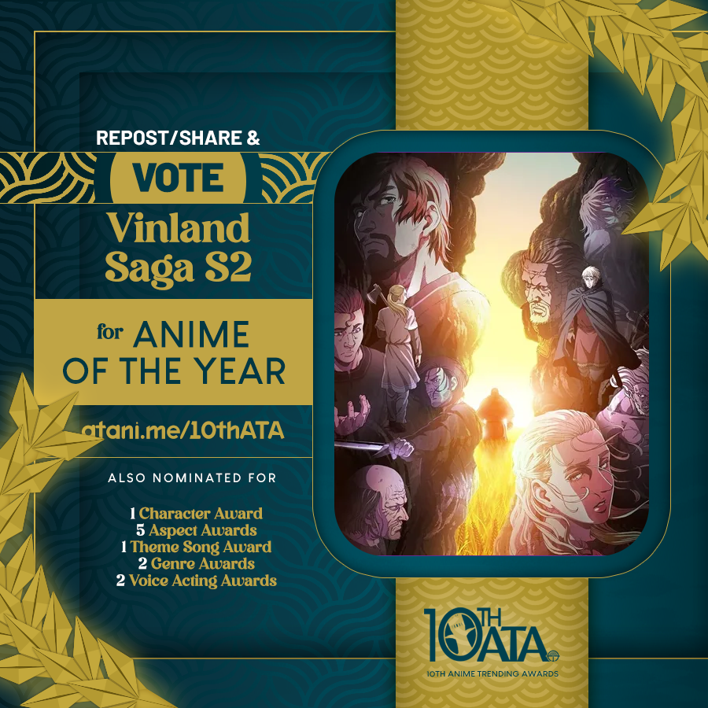

Makoto Yukimura, nascido em 8 de maio de 1976, é um mangaká japonês. Yukimura fez sua estreia com o mangá de ficção científica Planetes, serializado na revista Weekly Morning de 1999 a 2004 e adaptado em uma série de anime de 26 episódios pela Sunrise. Antes disso, ele trabalhou como assistente de Shin Morimura. Desde 2005, ele está trabalhando na série de mangá Vinland Saga, que foi serializado pela primeira vez na Weekly Shōnen Magazine e, em seguida, na revista mensal Afternoon devido a problemas de ritmo de lançamentos. Por este trabalho, ele recebeu, em 2009, o Grande Prêmio do Festival de Artes de Mídia do Japão na categoria mangá. Em 2012, Yukimura ganhou o 36º Prêmio de Mangá Kodansha na categoria Geral pelo mesmo trabalho. Em 2010, foi convidado do Festival Internacional de banda desenhada de Angolema.Em 2019, seu mangá de maior sucesso, Vinland Saga foi adaptado em uma série de anime pelo estúdio Wit.
O MangáVinland Saga começou a serialização em abril de 2005, na revista semanal shōnen Weekly Shōnen Magazine da editora Kodansha, onde foi serializado até outubro do mesmo ano. Em seguida, o mangá entrou em um hiato de dois meses, retomando a serialização no final de dezembro de 2005 na revista mensal seinen Afternoon, também de propriedade da Kodansha. Esta mudança foi causada pelo autor Yukimura, que descobriu que não se poderia manter num cronograma de produção semanal de longo prazo. Em uma entrevista de janeiro de 2008, Yukimura revelou que ele se inspirou para entrar na indústria de mangás através da leitura do mangá Fist of the North Star quando era um menino. Na mesma entrevista, disse que sempre quis produzir uma série que refletia os mesmos temas de "força e justiça". Os dois primeiros volumes foram inicialmente lançados sob o selo Weekly Shonen, e depois reeditado sob o selo Afternoon após a mudança na serialização.
As reimpressões do mangá na Afternoon apresentaram um novo design e as capas foram redesenhadas. Apesar da variação do número de capítulos compilados em cada volume, o total de páginas são todas mais ou menos a mesma, por volta de 215 páginas por volume. No Brasil, é licenciado e publicado desde fevereiro de 2014 pela editora Panini Comics. Os personagens principais são de descendência dinamarquesa - viquingues que vieram à Inglaterra para ajudar na invasão do país organizada pelo rei Sweyn. A maioria são lutadores prodigiosos, e, embora nenhum deles sejam explicitamente sobre-humanos, críticos da série têm comentado que excedam os limites humanos quando entram em combate.
Vinland Saga tem sido bem sucedido comercialmente no Japão, com vendas estimadas de 1,2 milhão de cópias dos cinco primeiros volumes a partir de junho de 2008, e vários volumes apareceram na Taiyosha no top dez da lista de mangás mais vendidos. A série foi indicada ao Grande Prêmio de Manga em 2008. Em 2009, foi galardoado com o Grande Prêmio na divisão mangá da premiação Japan Media Arts Festival. Ganhou o 36º Prêmio de Mangá Kōdansha na categoria Geral em 2012. O primeiro volume foi avaliado por MangaCast em 2005. Esta avaliação elogiou Vinland Saga por suas sequências de ação fluida, observando como autor Yukimura fez uma boa transição para o gênero de ação após o término de seu trabalho anterior Planetes. A principal crítica do crítico foi que ele descobriu que teve de suspender sua descrença mais vezes do que teria gostado numa série de ficção histórica. Além, teme então que as próximas interrupções na serialização mensal seriam para retardar a produção em série "para um arrastamento".
